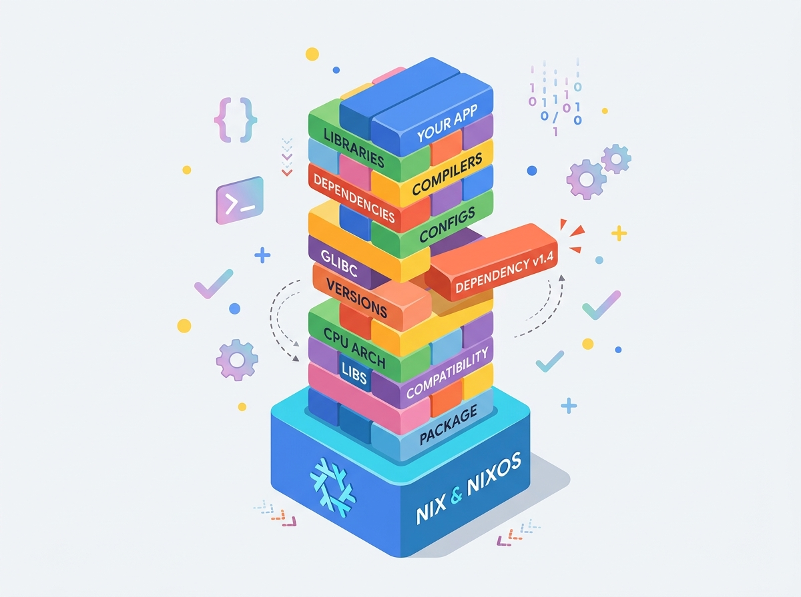
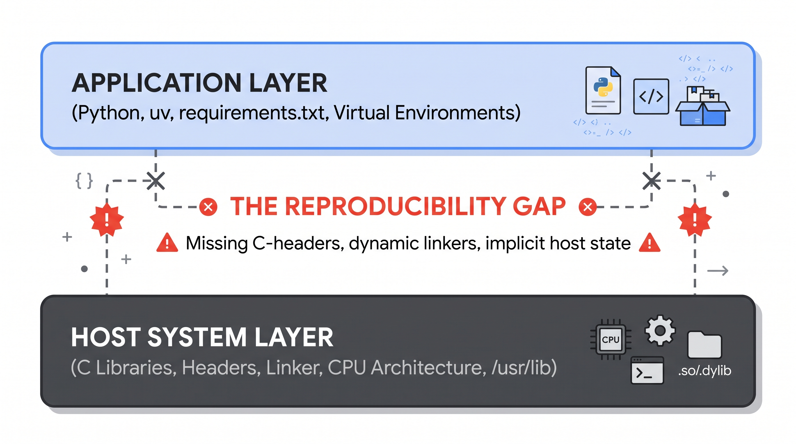
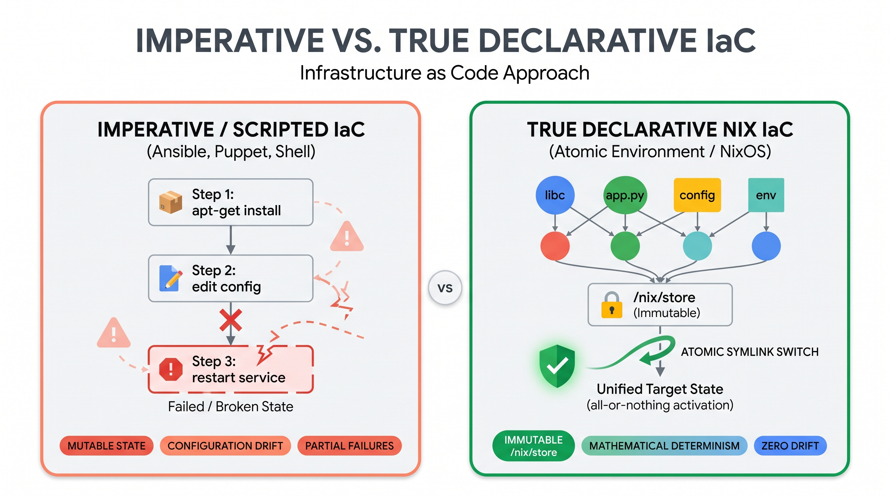

Welcome to the nixB Codelab! In this interactive lab, we will explore the foundational problems of software reproducibility. We won't start by learning a tool; instead, we will start by experiencing the reason tools like Nix were built in the first place.
flake.nix to guarantee a reproducible environment.To run this laboratory, you need the Nix package manager with Flakes enabled.
Unlike traditional package managers, Nix will not alter your global system files (/usr/bin, /etc). Everything Nix downloads or builds is stored safely inside a dedicated /nix directory, which can be cleanly removed at any time.
The fastest, most reliable way to install Nix with experimental features (Flakes & new CLI) automatically enabled is via the Determinate Systems installer:
curl --proto '=https' --tlsv1.2 -sSf -L https://install.determinate.systems/nix | sh -s -- install
Follow the on-screen prompts and restart your terminal session once the script finishes.
If you prefer the standard upstream installer from nixos.org:
# Run multi-user daemon installer
sh <(curl -L https://nixos.org/nix/install) --daemon
Important: If using the upstream installer, you must explicitly enable Flakes by creating ~/.config/nix/nix.conf:
mkdir -p ~/.config/nix
echo "experimental-features = nix-command flakes" >> ~/.config/nix/nix.conf
Verify that your terminal recognizes Nix and that Flakes are operational:
nix --version
(You should see
nix (Nix) 2.x.x
or later).
Peace of Mind: Should you ever wish to completely remove Nix after completing this course, simply run /nix/nix-installer uninstall (if using the quick installer) or delete /nix and your Nix configuration files.
Let's dive in!
The Hook: Let's experience a classic failure. Imagine you're working on a Python project that requires a specific C library (libsecp256k1) to compile securely.
If you have Nix installed, we can simulate this environment failure without polluting your host system or needing to pre-install Python/pip:
Run this command in your terminal:
nix shell nixpkgs#uv --command uv run --no-binary --with secp256k1 python -c "import secp256k1"
Nix will dynamically fetch the uv toolchain, which automatically sets up a clean, isolated Python environment. The --no-binary flag forces uv to compile secp256k1 from source instead of downloading pre-compiled binaries. You will immediately encounter a build failure:
× Failed to build `secp256k1`
├─▶ The build backend returned an error
...
'pkg-config' is required to install this package (or 'secp256k1.h' file not found)
Why did this happen? Nix successfully provided a clean Python interpreter and uv dynamically, but because we did not declare the C library dependencies (pkg-config, secp256k1 development headers) in our environment shell, uv has no access to the system-level components needed to compile the C-extension. This illustrates that language-level package managers cannot resolve system-level dependencies.
Application-level package managers (like pip, uv, poetry, npm, or cargo) only manage files within their own localized runtime sandboxes. They make a massive, unstated assumption: that the underlying host operating system already provides the required C compilers, dynamic linkers, and system headers.
When setting up environments traditionally, developers rely on imperative commands:
sudo apt-get update && sudo apt-get install -y build-essential libsecp256k1-dev pkg-config
Every time a command with sudo is executed, it mutates the global state of the operating system:
/usr/lib or /usr/local/lib./usr/include.Over months of development, your operating system turns into a "Jenga Tower". Each project pulls or modifies system dependencies until a single package update causes the entire environment to collapse. Worse still, you cannot capture this state in your project's Git repository.

Figure 1: The Jenga Tower mental model illustrating how progressive imperative system modifications destabilize development environments.
Key Takeaway: Application package managers don't manage machines; they only manage files inside their language boundary. When C extensions are involved, global OS mutation creates configuration drift.
The difference between "the code compiles on my laptop" and "the system deploys deterministically on any machine" is what we call the Reproducibility Gap.

Figure 2: The Reproducibility Gap between language-level package managers and host system dependencies.
The table below contrasts the main paradigms used in industry today:
Technology | Scope of Isolation | Mechanism | The Reproducibility Weakness |
Virtualenv / uv | Language runtime | Path redirection | Zero system isolation; fails when native C/C++ libraries are missing. |
Docker | User-space filesystem | Linux cgroups / namespaces | Imperative Dockerfiles ( |
Nix Flakes | Complete dependency graph | Cryptographic hash in | Absolute determinism via mathematical pure functions and locked dependency trees. |
Nix is not just a package manager; it is a purely functional deployment model.
In purely functional programming, a pure function f(x) guarantees:
x, it always returns the exact same output y.Nix applies this mathematical principle to system software:
/usr/lib or /bin./nix/store/--/ . The libsecp256k1-v0.1 and libsecp256k1-v0.4) can peacefully coexist on the same disk without collision.In 2019, Nix introduced Flakes, bringing modern declarative lockfile semantics to system environments. A Flake standardizes two files:
flake.nix (The Blueprint): An explicit, declarative description of your project's inputs (source repositories, package sets) and outputs (packages, development shells, services).flake.lock (The Pin): A cryptographically pinned JSON manifest recording the exact Git commit hashes of every dependency.When a collaborator clones your repository and runs nix develop, Nix reads flake.lock and reconstructs the bit-for-bit identical environment—whether running on Ubuntu, Arch Linux, macOS, or a Chromebook thin client.
Let us now resolve the compilation failure we witnessed in Step 2. Instead of polluting our operating system with sudo apt install libsecp256k1-dev, we declare our environment declaratively.
We create a flake.nix that injects secp256k1 and pkg-config directly into our local development shell:
{
description = "Hermetic Python C-Extension Laboratory";
inputs = {
nixpkgs.url = "github:NixOS/nixpkgs/nixos-unstable";
};
outputs = { self, nixpkgs }:
let
system = "aarch64-linux"; # or "x86_64-linux" / "aarch64-darwin"
pkgs = import nixpkgs { inherit system; };
in {
devShells.''${system}.default = pkgs.mkShell {
# System-level dependencies made available to the compiler
nativeBuildInputs = [ pkgs.pkg-config ];
buildInputs = [ pkgs.secp256k1 ];
# Language runtime
packages = [ pkgs.uv (pkgs.python311.withPackages (ps: [])) ];
shellHook = ''
echo "🛡️ Hermetic C-Extension Shell Initialized"
'';
};
};
}
Now run the exact same command wrapped in our Nix environment:
nix develop --command uv run --no-binary --with secp256k1 python -c "import secp256k1; print('✅ Successfully imported secp256k1!')"
Output:
🛡️ Hermetic C-Extension Shell Initialized
✅ Successfully imported secp256k1!
Nix dynamically linked the C-header files and compiled the Python extension within a transient, hermetic environment—leaving the host machine completely untouched.
Traditional Infrastructure as Code (IaC) tools like Ansible, Chef, or Puppet are imperative state machines: they execute scripts against an existing machine, attempting to push it toward a desired state. If a package was manually installed or removed previously, Ansible playbooks can fail unpredictably.
Nix represents True Declarative IaC:

Figure 3: Imperative state modification vs pure atomic graph evaluation in Infrastructure as Code.
Before progressing to the advanced multi-daemon laboratory, test your understanding of the core concepts covered so far. Select your answers and click Check Answer for immediate validation:
Now that the conceptual foundations are verified, we transition into the advanced hands-on laboratory. Here, we demonstrate how Nix orchestrates a heterogeneous, high-stakes financial software stack: a private Bitcoin Regtest node, a Core Lightning (CLN) daemon, and LNbits with its native Scrum task extension.
The full multi-daemon orchestrator and extension laboratory are packaged in the nixB repository. Open your terminal, clone the repository, and enter the root workspace:
git clone https://github.com/andre-amorim/ou_tm470.git
cd ou_tm470
Repository Anatomy: The laboratory definitions and LNbits extensions are encapsulated within the lab/ directory, while the root flake.nix unifies the entire multi-daemon lifecycle and data sandbox.
From the root of the cloned repository, execute the unified bootstrap command:
nix run .#bootstrap
Notice what Nix is doing:
bitcoind, lightningd, caddy, and uv without requiring root permissions..data/.Open a second terminal, navigate to the ou_tm470 repository directory, and query your local regression testing daemon:
bitcoin-cli -datadir=.data/bitcoin getblockchaininfo
Notice that the chain is reported as regtest. To simulate immediate transaction confirmation, mine 101 initial blocks:
bitcoin-cli -datadir=.data/bitcoin generatetoaddress 101 $(bitcoin-cli -datadir=.data/bitcoin getnewaddress)
Open your web browser and navigate to:
http://localhost:5000
adminTM470NixBhttp://localhost:5000/scrum/
Tip: If port 5000 or 8080 is already occupied on your system, you can supply custom ports via environment variables: PORT=5050 nix run .#bootstrap.
Why is software reproducibility critical for mission-critical and financial software?
As you conclude this laboratory, reflect on the software engineering implications:
/nix/store, and adapting non-standard build systems.Congratulations! You have completed the nixB Didactic Laboratory for Software Reproducibility.
flake.nix development shell for native C-extensions.To explore further, check out the project monorepo at GitHub: andre-amorim/ou_tm470.